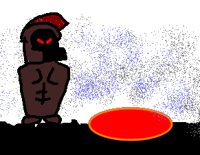

Christopher Nolan's Odyssey
Thoughts on The Odyssey
I went to this movie with like barely any expectation, in fact I only went cuz it was on a crazy good discount, paraphrasing it said something like “You have 24 hours to buy or we KILL you.” Liked it, the CGI was well integrated, the audio design is awesome, I heard some jabs at how the conversations weren’t well mixed, but that wasn’t a problem considering I had subtitles to fall back to. My one gripe is that the dialogue was a bit clunky, yknow with the whole ancient greek setting you wouldn’t expect modern english. It was sometimes amusing, at least. Otherwise? Otherwise its real good deserves a go.
